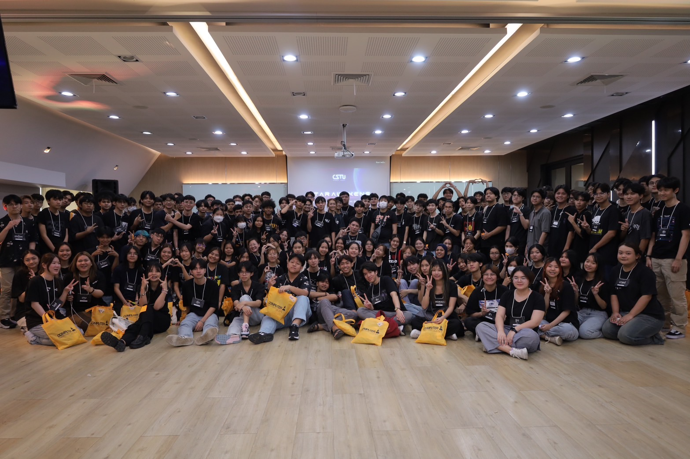

เปิดประวัติ "นางสาววรรยา จันทะคาม" นักศึกษามหาลัยธรรมศาสตร์ CSTU
วรรยา จันทะคาม
ชื่อเรียกทั่วไป: เตย
วันเกิด: 22 พฤษภาคม 2548
อายุ: 19 ปี
ความสามารถพิเศษ
เล่นกีฬาได้ดี
- ฟุตบอล
- ปิงปอง
- เปตอง
- ยิงปืน
อะไรที่ชอบทําเพื่อให้คลายเครียด?
- เป็นอีก 1 หัวข้อที่อยากให้ทุกคนได้รู้และทํารู้จักกับเรามากขึ้น
- โดยส่วนตัวแล้วเวลาที่ทุกคนเครียดก็ต้องหาอะไรทําเพื่อให้ตัวเองผ่อนคลาย เช่น
- การดูหนัง
- ฟังเพลง
- ออกไปสนุกกับเพื่อน
- เล่นกีฬา
- อ่านนิยาย
แต่ทั้งหมดที่กล่าวมายังไม่ใช่สิ่งที่เราทําแล้วคลายเครียดที่สุด สิ่งที่ทําเราแล้วได้ผลดีที่สุดต่อตัวเราคือ
ชอบดูคลิปวิดีโอเกี่ยวกับการท่องเที่ยว แนวลุย ๆ
ประเทศที่คนส่วนน้อยเลือกที่จะไม่ไป เพราะไม่ได้มีความสะดวกสบายมากขนาดนั้น
แถมยังอันตรายมากอีกด้วยยกตัวอย่างเช่น อินเดีย อัฟกานิสถาน อิหร่าน
การที่ได้ดูที่ผ่านมามันเป็นเหมือนการเปิดโลกกว้าง
และ รู้จักวัฒนธรรมของประเทศต่างๆมากขึ้น ถ้าคิดว่าการที่เราอยู่ในประเทศที่ค่าแรงน้อยแล้ว แต่มันไม่ใช่เลย
ยังมีอีกมากมาย
ที่ลําบากกว่าประเทศเราเยอะ อยากไปลองเที่ยวดูด้วยตัวเองสักครั้งการใช้ชีวิต ความเป็นอยู๋ของประเทศต่าง ๆ ที่วัฒนธรรมก็ตามกัน
การไปเที่ยว
เหมือนเราได้ปล่อยวางสิ่งที่เราเครียดออกจากตัวเองสักพัก แล้วค่อยกลับมาลุยในการทําหน้าที่ของตัวเองต่อ...
Go to youtube ตัวอย่างช่องที่ดู
คติประจําใจ
MOUE FORWARD DON'T STOP AT ALL
จุดเริ่มต้นของการมาเป็นนักศึกษาที่มหาลัยธรรมศาสตร์สาขาวิทยาการคอมพิวเตอร์


Thammasat University เป็นมหาวิทยาลัยแรกที่มีการเรียนการสอนในหลักสูตรวิทยาการคอมพิวเตอร์ก่อตั้งขึ้นเมื่อปี พ.ศ. 2529
ซึ่งเป็นคณะลำดับที่ 9 ของมหาวิทยาลัยธรรมศาสตร์และเป็นคณะแรกที่จัดตั้งขึ้น ณ ศูนย์รังสิต เลยเป็นเหตุที่เลือกเข้าศึกษาต่อที่
cstu
รีวิวหลักสูตรที่เรียน ><
คณะวิทยาการคอมพิวเตอร์ สาขาคอมพิวเตอร์ประยุกต์ (โครงการพิเศษ)
รีวิวในสถานะที่เรียนมาแล้ว 3 สัปดาห์ cstu ดีมากไม่มีเรียน เคมี ชีวะ ฟิสิกฟ์
เทอม1เจอสถิติเทอม2เจอแคลเทอม1วิชาสาขาอีก 3ตัว CS100 เรียนเขียนหน้าเว็บด้วยภาษา HTML CSS CS101 เรียนโครงสร้างแบบไม่ต่อเนื่อง logics
CS102 เรียนพื้นฐานการแก้ปัญหาและการโปรแกรมคอมพิวเตอร์ วิชามอเรียน tu101 โลก อาเซียน และไทย